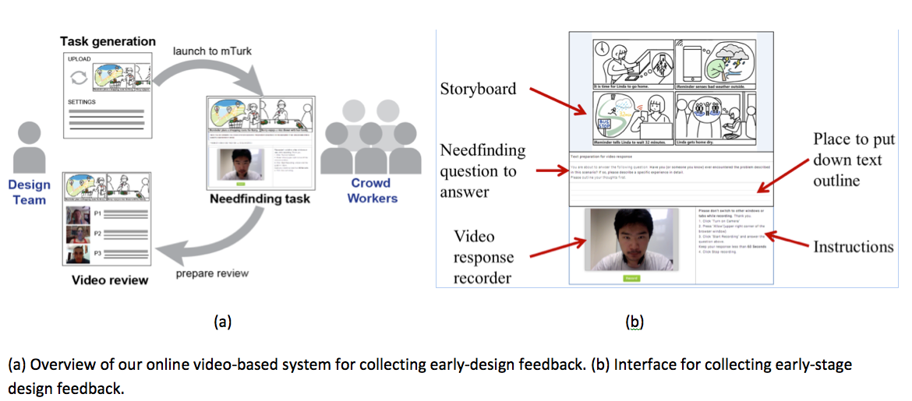

Abstract
Online collaboration tools enable developers of interactive systems to quickly reach potential users for usability testing. Can these technologies serve designers who seek feedback on user needs during the earliest stages of design? Online needfinding may help designers create products and services that can target a more diverse user population. To explore this, we conducted a feasibility study to compare face-to-face methods with online needfinding sessions. We found that video can sufficiently capture nuanced reactions to preliminary concept storyboards, but that feedback providers need guidance and structure. We then introduce a tool for collecting early-stage design feedback from online participants and conduct a case study with a professional design team. The team conducted needfinding activities with local participants, as well as a cost-equivalent number of online participants The case study demonstrates that combining online crowdsourcing with a video survey tool provides a simple and cost-efficient way to collect early-stage feedback.
Materials
PDF |
Slides |
BibTeX